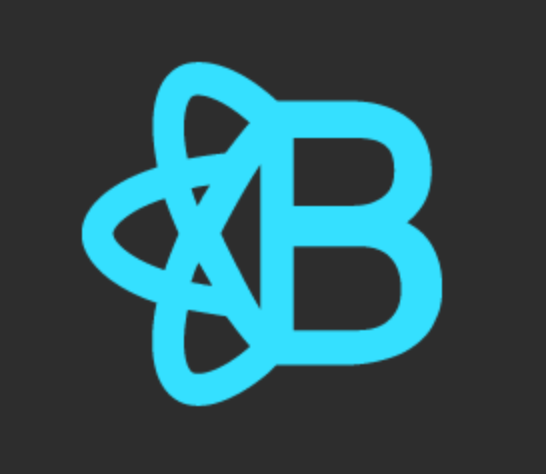
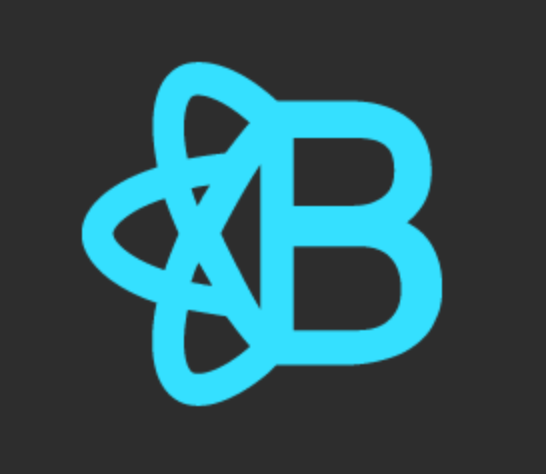

Portfolio
Where Art Thou?
Single page CRUD application that displays public art throughout Nashville with the goal of increasing public awareness of cultural and historical sites as well as raising artist visibility. Users can view an extensive grid of works in Nashville along with pictures and details, and can save particular works to personalized lists. Built with React.js and Reactstrap, utilizing a public API and a user-generated database.

Ink Inc.
Multi page CRUD application that helps tattoo artists connect with clients. Built with C# and ASP.NET Core Entity Framework and Identity Framework, the application allows artists to create accounts displaying their information and portfolios, and clients to search for artists and parlors by city. Artists also have the option to create pages for their parlors or join existing parlors.


 
